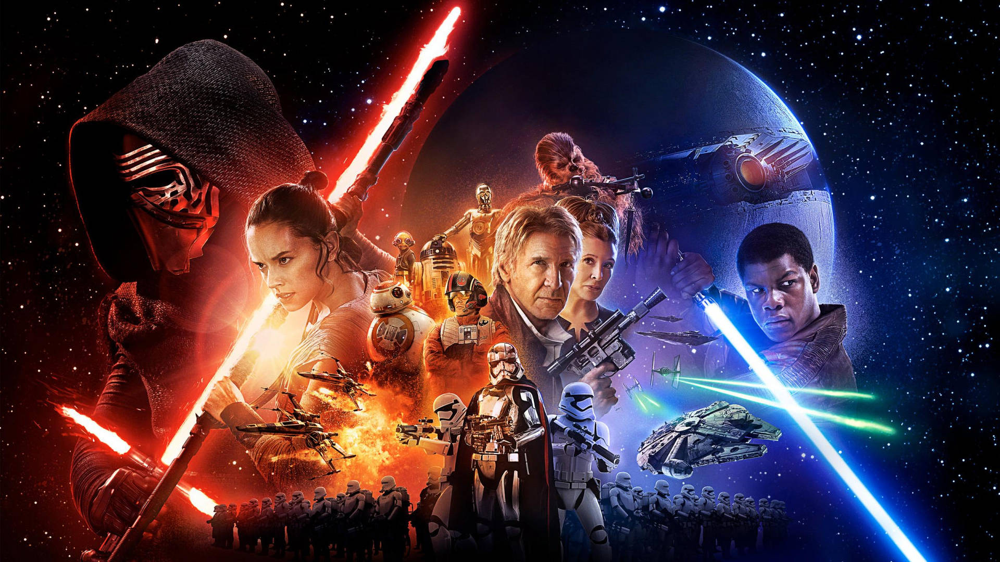

Welcome to the Star Wars Universe
Star Wars is an epic space opera franchise created by George Lucas that has captivated audiences worldwide since its debut in 1977. Set in a distant galaxy "a long time ago," the saga unfolds in a universe filled with epic battles, rich mythology, and memorable characters. From the struggle between the light and dark sides of the Force to the rise and fall of empires, Star Wars has become a cornerstone of modern pop culture, spawning numerous films, TV series, books, and games.
The Story of Star Wars
The central narrative of Star Wars revolves around the battle between the Jedi and the Sith, two powerful groups who harness the mystical Force in different ways. The story begins with the fall of the Galactic Republic and the rise of the Empire, led by the sinister Sith Lord, Emperor Palpatine. At the heart of the saga is the Skywalker family, whose members play pivotal roles in the galaxy's fate. The Original Trilogy follows the journey of Luke Skywalker as he learns the ways of the Jedi, confronts his dark heritage, and helps restore peace to the galaxy. The Prequel Trilogy explores the origins of Darth Vader, while the Sequel Trilogy concludes the Skywalker saga with the rise of new heroes and villains. 